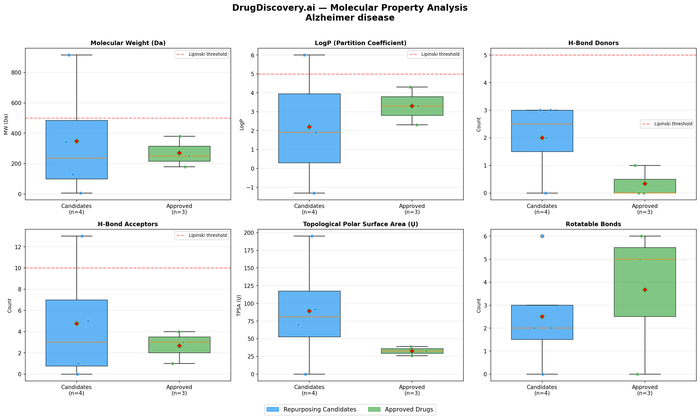
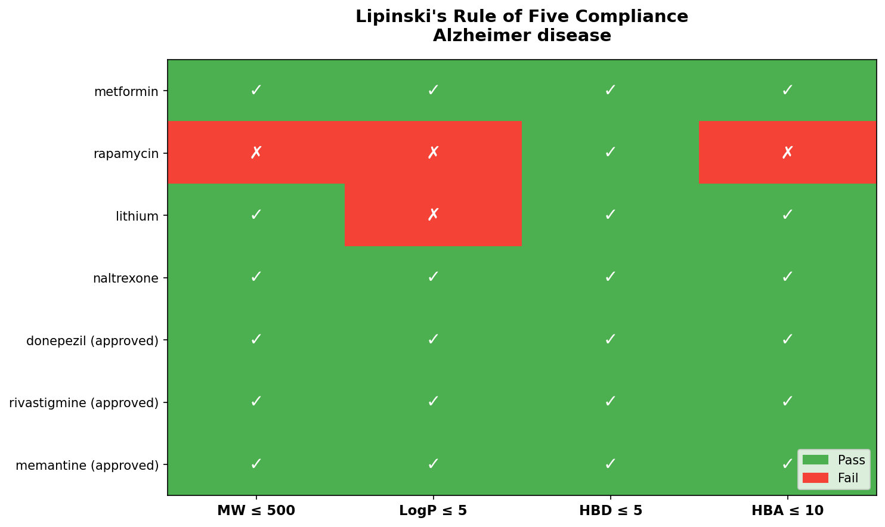

This analysis evaluated 4 drug repurposing candidates for Alzheimer disease. 3 candidates pass Lipinski's Rule of Five for drug-likeness. The top-ranked candidate is Naltrexone with a confidence score of 7/10. These results should be validated with experimental studies.
| Drug | Paper Count | Relevance |
|---|
No specific findings extracted.
| Drug | MW (Da) | LogP | HBD | HBA | Lipinski | Status |
|---|---|---|---|---|---|---|
| Metformin | 129.16 | -1.3 | 3 | 1 | ✓ Pass | Candidate |
| Rapamycin | 914.2 | 6.0 | 3 | 13 | ✗ 3 violations | Candidate |
| Lithium | 7.0 | nan | 0 | 0 | ✓ Pass | Candidate |
| Naltrexone | 341.4 | 1.9 | 2 | 5 | ✓ Pass | Candidate |
| Donepezil | 379.5 | 4.3 | 0 | 4 | ✓ Pass | Approved |
| Rivastigmine | 250.34 | 2.3 | 0 | 3 | ✓ Pass | Approved |
| Memantine | 179.3 | 3.3 | 1 | 1 | ✓ Pass | Approved |


Original indication: See literature for original use
Proposed mechanism: Potential mechanism for Alzheimer disease based on literature analysis
Evidence: No direct literature mentions in retrieved papers; Passes Lipinski's Rule of Five; Optimal molecular weight (341.4 Da); Favorable lipophilicity (LogP=1.9)
Original indication: See literature for original use
Proposed mechanism: Potential mechanism for Alzheimer disease based on literature analysis
Evidence: No direct literature mentions in retrieved papers; Passes Lipinski's Rule of Five; Acceptable molecular weight (129.16 Da); Suboptimal lipophilicity (LogP=-1.3)
Original indication: See literature for original use
Proposed mechanism: Potential mechanism for Alzheimer disease based on literature analysis
Evidence: No direct literature mentions in retrieved papers; Passes Lipinski's Rule of Five; Extreme molecular weight (7.0 Da); Suboptimal lipophilicity (LogP=nan)
Original indication: See literature for original use
Proposed mechanism: Potential mechanism for Alzheimer disease based on literature analysis
Evidence: No direct literature mentions in retrieved papers; Poor drug-like properties (3 Lipinski violations); Extreme molecular weight (914.2 Da); Suboptimal lipophilicity (LogP=6.0)
This analysis was generated using the DrugDiscovery.ai pipeline:
This is an AI-assisted analysis for research purposes. All candidates require experimental validation. This tool does not provide medical advice.